Releasing an app/service
When, to who and for what price?
by @founderfred
TL;DR
- Q: When should you release an app/service?
- A: After you have had your first happy returning customers for a while and can take on the 10-100x more customers that are eagerly waiting for you to release
- Q: To who should you release an app/service?
- A: To the ones that you can help accomplish something important better than anyone else
- Q: How much should my customers pay for the app/service?
- A: Slightly less or more than what they pay today, but your market price may be much higher or lower than existing apps/services
This talk
- Creating an app/service is easy - Improving lives of people is not
- Psychology and science of market-opportunity discovery
- What to release and when
- Setting a market price
Part 1
Creating an app/service is easy
Improving lives of people is not
About me
- Personality type: ENTP
-
"the ENTP's primary interest in life is understanding the world that they live in"
- PRO: Rational, logical, curious, "uncompromisingly honest"
- CON: Not a hustler, not a sales rep
My life as a geek and consultant
- 1990 - 4 years old - Changed password on Dad's work-laptop causing him to miss work for half a day
- 1995 - 9 years old - First programming language (BASIC)
- 1996 - 10 years old - First personal website (HTML)
- 2001 - 15 years old - Started building interactive websites
- 2002 - 16 years old - First website built for client
- 2004 - 18 years old - Started web/IT consultancy business
- 2005 to 2016 - 19-30 years old - Consulting, Studying, Traveling
"Much experience! Such expert!"
Doge
May 2017
My history as an entrepreneur
- Started six companies, first in 2002
- $850,000 investor money
- Creative, skilled teams
- Covered by TechCrunch, VentureBeat, GigaOM, Fast Company, VatorNews, Business Insider
- Thousands and thousands of hours in product/service development without pay
- Lots of insane work weeks
Great success?
Five companies shut down within 3 years of their initiation
&
One court-case between previous co-founders spanning several years
However, apply math and...
What is the difference?
- Only this company actually promises to help real people accomplish something important in a way that actually improves their lives
Part 2
Psychology and science of market-opportunity discovery
The traditional innovation process
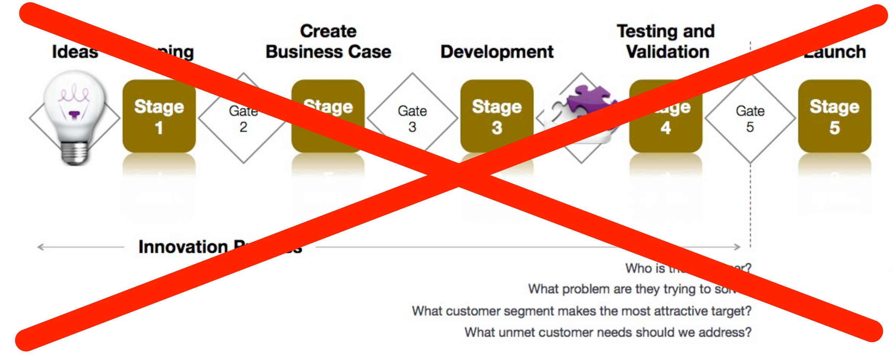
- Begins with the idea/solution
- Extremely high failure rates
- Expensive as *****
A smarter approach
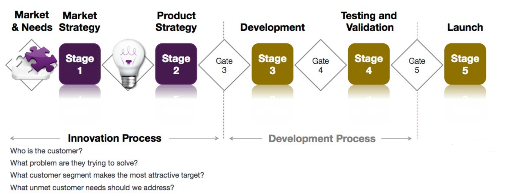
- Begins with researching, talking to and getting to know the kind of customers that align with your dreams and inspirations
- THEN start a business that offers value to those customers
It is tempting to believe that you already know what customers want, and that your idea is good enough to try out in the real world
Look at it this way...
Let's assume that most Silicon Valley based startups, their investors, advisors, mentors etc are actually not completely clueless
Let's assume that they are actually smart, creative people with lots of experience (Thousands of startups)...
Let's assume that they most often start with building a beta version (Veeeery common)...
But still:
The overwhelming majority of these startups will fail
Also, there is a huge difference in efforts, for practically the same learning
- Start with building a beta version: 100-400 hours of unpaid work + $1000-25000 investment necessary
- vs
- Start with customer-needs and market research: 10-100 hours of unpaid work + $100-1000 investment necessary
Ergo...
Make sure the idea is revised, improved and has a clearly defined market before actually being built
"But lots of smart people like my idea and are telling me to just go for it!"
Be patient!
- Most often, advisors, incubators and investors will tell you to "go for it" or "get out of the building" and help you assemble a team even when the idea is premature!
- This may be practical for them, since their goal may be to "stimulate innovation" and fearing that their advisees will give up and look for employment instead, they rather see them trying out their ideas in a startup.
- Even many investors will invest in premature ideas for the fun of it, even when they suspect beforehand that the idea won't fly.
- Result: Extreme costs for you and society in lost opportunities
Premature ideas on the market
Again:
Most startups fail
Got it? Let's continue :)
Who chooses the customer?
-
YOU! At a higher level, YOU get to choose your customers and markets you want to learn about and understand.
-
At the lower level, YOU will strive to only attract the customers that actually get value from your business.
We need to learn about these customers and evaluate suitable market segments
However...
Traditional customer-driven evaluation metrics...
problems, solutions, features, specs, needs, selling points, benefits, advantages, pros, cons, etc
... have too many variables!
Traditional customer inputs...
"faster," "easy-to-use," "reliable," "smart," "powerful," "durable," "cheaper," and "better"
... are far too vague to have any meaningful value to designers and engineers!
"I wish there was a clean, systematic approach to creating breakthrough products/services!"
A CHALLENGER APPEARS
The outcome-driven approach to innovation
A hands-on systematic approach to devising breakthrough products/services
Again?
The outcome-driven approach to innovation
Thinking in the terms of a product's potential to get a job done and address the customer's desired outcomes
Again?
The outcome-driven approach to innovation
Addressing how to improve the lives of people using your product/service
First things first
Some theory...
Outcome-Driven Innovation
- Understand what customers want
- Innovate a breakthrough product/service
- Communicate about products/services based on what customers want
Outcome-driven thinking revolves around six basic concepts
- Jobs
- Desired outcomes
- Constraints
- Importance to the customer
- How satisfied the customer is today
- Market Opportunities = Underserved desired outcomes
Jobs = A Key Factor to Growth
- In both new and established markets, customers (people and companies) have jobs that arise regularly and need to get done
- To get the job done, customers seek out helpful products and services.
- Functional jobs
- Emotional jobs (Personal, Social)
Desired outcomes = Metrics That Drive Innovation
- Customers want to get their jobs done, but they are actually trying to achieve other things than the actual job at hand
- People do not want a half-inch drill, they want a half-inch hole, and they want it done in a certain way
- Desired outcomes define how they want to get the job done and what it means to get the job done perfectly
- Functional desired outcomes
- Emotional desired outcomes (Personal, Social)
Constraints = Roadblocks to Success
- Besides getting more jobs done, or a specific job done better, customers also need help overcoming the constraints that prevent them from getting a job done altogether or under certain circumstances.
- Functional constraints are often physical, regulatory, or environmental in nature.
- Emotional constraints (Personal, Social) are often cultural, moral or ethical in nature.
Market opportunities historically and in the future
- New jobs are created over time, old ones abandoned, but for the most time, jobs are constant over time
- Desired outcomes usually do not vary over time!
- Constraints varies over time with new technologies/regulations opening up for new possible product/service launches!
Not just a handful
- Most customers are mostly unaware of which exact job steps they perform, what desired outcomes they value and what constraints hold them down, and can at most list a handful of them from the top of their mind
- For most jobs, even those that may seem somewhat trivial, there are typically 50 to 150 or more desired outcomes
- YOU have to find these through careful studying, interviewing and understanding your customer's environment, drivers and motivations
Surveying Importance
- How important are the jobs, outcomes and constraints to customers?
- Defined as what percentage of customers assign the job/outcome/constraint either a 4 or a 5 on a scale to 1-5 in importance.
- Does not vary over time! (Cell phones were just as important 50 years ago as they are now)
Surveying Satisfaction
- How satisfied are they with the degree to which the tools/products/services they use today enables you to get the job done?
- Defined as what percentage of customers assign the job/outcome/constraint either a 4 or a 5 on a scale to 1-5 in satisfaction.
- Varies over time as new products/services arrives to market!
Underserved/Overserved Market Opportunities
- Underserved market opportunities = Important outcomes with unsatisfied customers
- Overserved market opportunities = Customers are more satisfied than necessary (Disruptive innovation necessary!)
The Opportunity Algorithm
Combines Importance and Satisfaction
Importance + max (Importance-Satisfaction,0)
= Opportunity
Example
Outcomes that customers use to measure how well a vendor executes the job of producing machined parts for new jet engine designs.
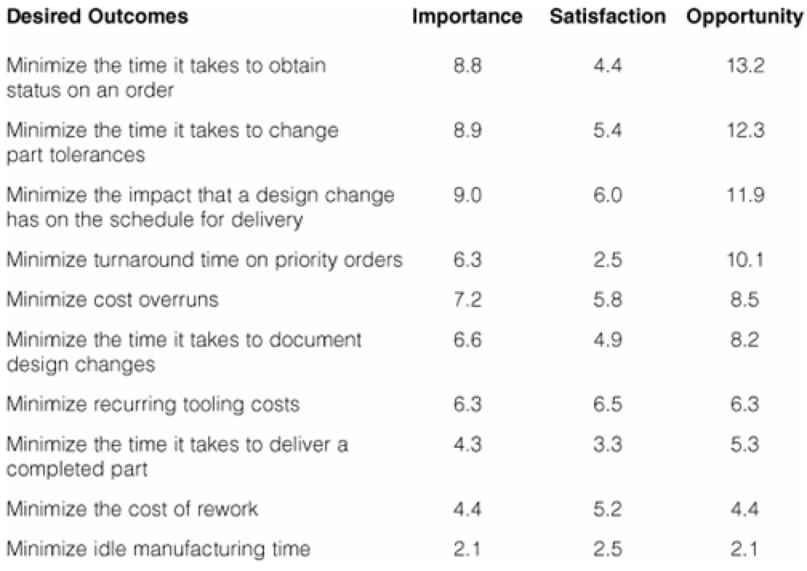The market segmentation methods helps you discover market segments related to attractive market opportunities
The ODI Landscape for a customer group
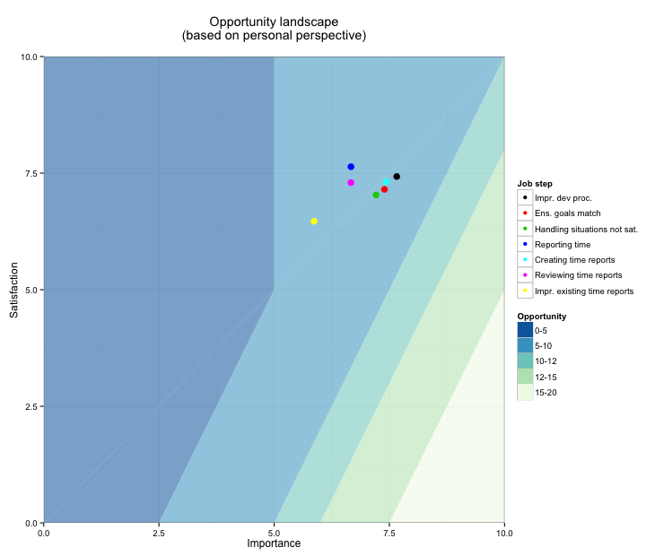
The ODI Landscape showing statistically discovered market segmentations
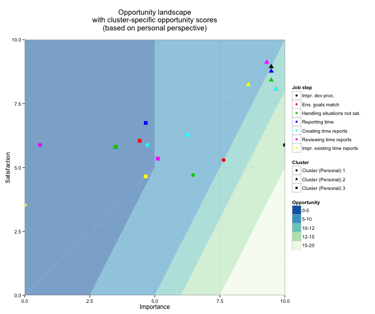
Each segment represents a different type of customer
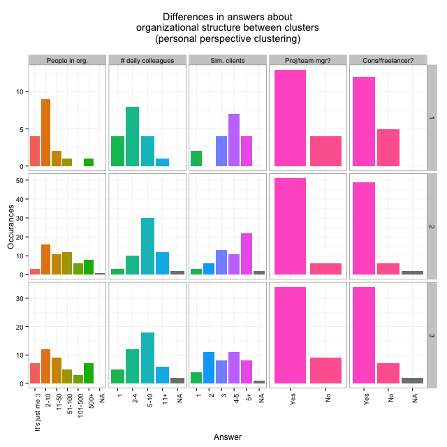
Read the book!
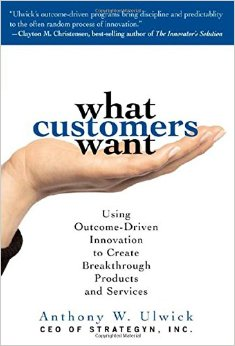"What customers want" by Anthony W. Ulwick
The best part...
It comes with instructions!
- 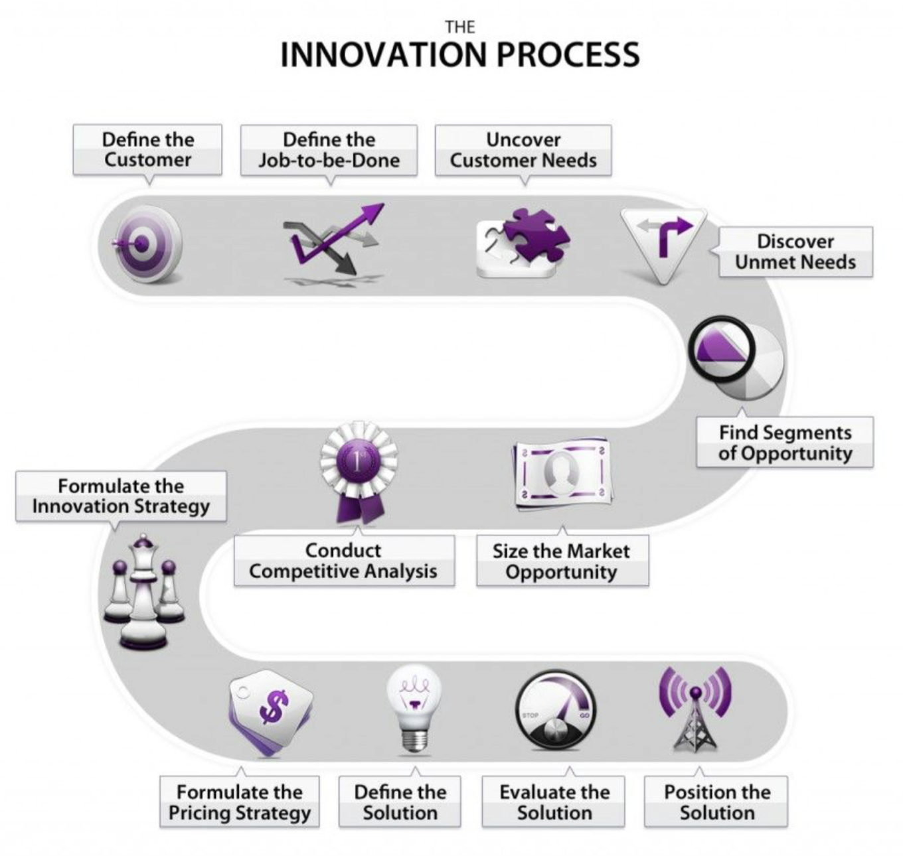
- The priorities and steps necessary to choose your product/service
For a quick summary, read pages 40-51 of this master thesis
Part 3
Releasing your next product/service
What to release and when?
This is what you want to release in the first weeks
- Day 1 - Your dreams and inspirations (To family, friends and co-founders)
- Week 1-2 - Your requests to meet up and talk with those in your broader customer type
- Week 4-6 - Your innovation survey (Hint: Buy good relevant survey responses from audience services)
- Week 6-8 - A marketing page which includes a rough first version of your offerings
- Week 9-10 - Marketing efforts/campaigns for validation, learning and price-gauging (Cost-per-click paid advertising may be fine to start with)
Q: What about the actual product/service?
A: First of all, forget about the notion of releasing a "product". It is never done in a vacuum.
You are offering value delivered from your company as a whole, which may include the customer getting access to a product/service but the customer will always gauge the complete value she gets from the relation with your company, not the product in itself.
With that in mind, this is a generalized "Release schedule"
- Whenever your company can offer real value to your single most ideal customer, release to them
- Whenever your company can offer real value to your first ideal customer target segment, release to them
- Whenever your company can offer real value to another highly ideal customer target segment, release to them
- etc
Be creative! Try to release as early and as often as possible!
There is nothing that states that you need to build a product/service to deliver real value
Example 1
Release a whitepaper that outlines the business case for something relevant to your future offering in exchange for feedback or getting them to join a mailing list
Example 2
Release early access to a tutorial or other documentation which helps the customer and yourselves gauge how well the solution might fit
Don't release without a reason
You want to be looking for the ability to gain critical insights in how well the solution will be aligned with the customer's need in order to prevent mistakes in the design of your solution
If you don't have a plan to follow up on these early releases, you might skip them altogether
Part 4
Pricing your next product/service
The elephants in a price
The trickiest part!
In the end, you are always selling to an individual - a human being
Understand who that individual is, how he thinks and what he eats for breakfast. Seriously
Human beings are NOT RATIONAL
Thinking is expensive!
Having to think is probably the single highest price in the perspective of a customer
This may be the single most important thing to understand
Read this book!

"Thinking - Fast and slow" by Daniel Kahneman
Value in the eyes of the customer
The human being does not buy a product or service
As mentioned previously, the customer will always gauge the complete value she gets from the relation with your company, not the product in itself
A low price is almost never the most important customer need
The price is only related to one of between 50-150 desired outcomes
"How important is it that the price is low?"
The customer needs to perceive that they will get value for doing business with your company
Customer value equation
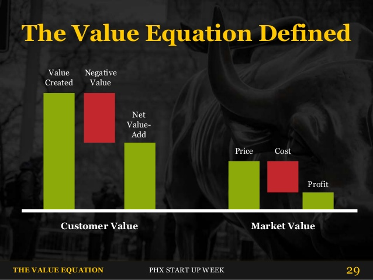Negative Value is NOT remotely the same as the Price
Take your time grasping the whole picture!
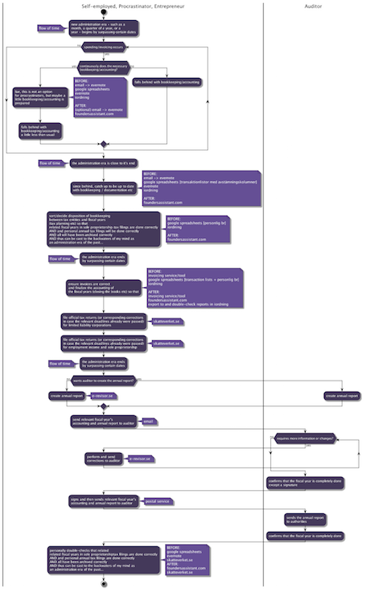Elephants in the price
- The price of having to think
- The price of having to force others to think
- The price of changing habits / behaviors
- The price of future unexpected interruptions
- The price of having to explain failure
- The burden of transferring money
- The market price - actual transfer of money between parties - only a small part of the price
Changing workflows is often a huge cost for your customer
It does not matter if you give away your product for free!
Net Value-Add
The additional value of your solution helping your customer achieve their desired outcomes better than the alternatives
Your competitors are NOT the alternatives
Which was the alternative to McDonald's milkshakes?
Burger King's milkshakes? Soda?
NO!
The answer is
The Banana
Why?
Customer interviews showed that the people buying milk shakes where those that were going to work knowing they would be stuck in traffic. They may had skipped breakfast and wanted something that kept them from feeling peckish on the way to work. The milkshake is easy to sip from while driving, lasts quite a while and doesn't make a mess. The mornings when they did not have time to buy a milkshake, they'd grab a banana instead.
Got it?
Let's try to set a price for your product now
Coming up with how to charge your customer
- Don't force people to think!
- Charge them in the way that they are used to
- Keeping it simple at the beginning
- For instance: Offer an unrestricted "early adopter" subscription plan which is made available to a restricted number of users (1, 10, 100 etc you decide)
Coming up with an initial market price
- Estimate the monetary value of desired outcomes and substract value of undesired outcomes
- You end up with a net monetary value that customers will gain by using your product
- Divide by 10 to get a good starting price that reflects what the customer may be willing to pay
Context matters
- What you tell your customers that you are selling automatically sets internal "cheap/expense/normal" price-"feelings" in the perspective of the customer
- "Expensive" in one category may be "Cheap" in another - same monetary value - so think about how you label your product/service
- It helps playing mind-games such as "Who would pay if this cost x100 more? Would use the service if we GAVE them $10.000 per year?" etc
In the end, choose an initial price that feels good
... based on your hundreds of interactions with potential customers
Test your initial price
"Only intel from paying customers is valid when you’re trying to get intel on how to charge customers. Think about that for a minute."
- Lincoln Murphy
Increase your initial price gradually
Stop when you are seeing a clear decrease in sales
Real world example of this initial pricing strategy
Hemsida24.se - The most popular website builder in Sweden
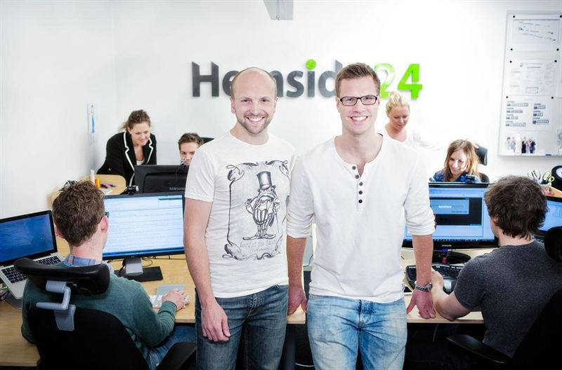
Today around 15.000 paying customers, paying at least 99 SEK / month
How did they arrive at 99 SEK / month? (Around $11 / month)
Their ideal customer that they chose
... was the members of the model photography community which they ran at the time
They had realized that most of them wanted their own web site
Started by pitching the concept and a price to friends, family, colleagues and journalists they thought was right
500-600 SEK per year
Feedback from a journalist
It is too low!
So they chose to think about a new official list price, and try it out by offering limited in time and introductionary discounts
- First month: 495 SEK per year (Ordinary price 1495 SEK per year)
- Second month: 695 SEK per year (Ordinary price 1495 SEK per year)
- Third month: 995 SEK per year (Ordinary price 1495 SEK per year)
- Fourth month: 1195 SEK per year (Ordinary price 1495 SEK per year)
- Started to notice pushback
- Fifth month: 1395 SEK per year (Ordinary price 1495 SEK per year)
- Noticed significant pushback
- Went back to 99 SEK per month (around 1195 SEK per year)
Part 5 - Some final words
What I recommend today's students to do in order to become successful entrepreneurs
Step 1 out of 6
The following books completely changed the way I reason about value and human behavior:
- What Customers Want (Anthony W. Ulwick)
-
Thinking - Fast and slow (Daniel Kahneman)
- Hooked: How to Build Habit-Forming Products (Nir Eyal)

- 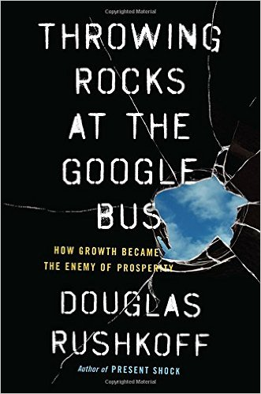
Throwing Rocks at the Google Bus (Douglas Rushkoff)
Step 2 out of 6
Understand the difference between "ordinary happy people", millionaires and billionaires and choose wisely what you want to become
Step 3 out of 6
Adopt outcome-driven thinking
Step 4 out of 6
Gain experience by starting and failing with startups for 1-3 years (insane work weeks and minimum pay is recommended)
Step 5 out of 6
Realize that you did not adapt outcome-driven thinking 1-3 years ago
Step 6 out of 6
Adopt outcome-driven thinking and apply life experiences in your first successful startup
Useful life experiences
- Understand actual value (Price != Market price)
- Understand who and where you are and what you want to achieve
- Understand which ones to listen to
- Understand scale, exponentiality
- Remove manual labor, think systems
- Understand true cost of using a third party service
- Understand the true cost of doing anything out of the ordinary
- Understand cognitive burden
- Don't forget emotional jobs (personal and social)
- Understand that you and everyone involved in a business needs to get paid for every second of work
Start TODAY
Don't wait for your studies to be finished. Having multiple years of work experience when graduating is completely within reach as a student entrepreneur :)
You are now ready to start innovating
Bonus advice: don't try to imitate successful startups!
Questions?
Thank you!
Want to discuss an idea/app/product/service?
Contact me:
fred@clerk.ai